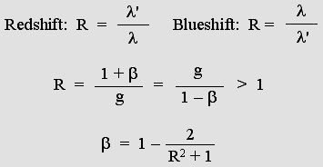
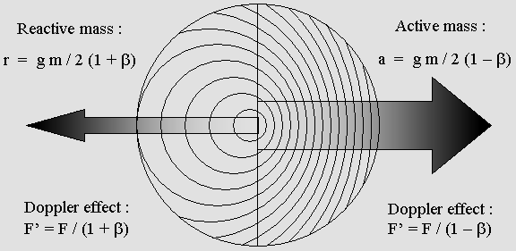
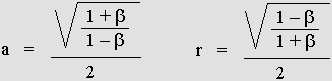

|
Lorentz
discovered matter contraction, but he also very clearly stated that matter
should not contract on transverse y and z axes. In addition, he strongly
believed that there was an aether and he was well aware that the light
waves should undergo this special Doppler effect involving no transverse
contraction. Finally, the only useful information to be remembered from his
famous transformations is the constant transverse length or wavelength:
y' = y z' =
z
As
a result of the normal Doppler effect, waves are more contracted
forward than they are dilated backward. But here the forward contraction
is always the reciprocal of the backward dilation. This
leads to Lorentz's Relativity.
For
example, a 1000 Hz loudspeaker moving at 60% of the speed of sound (beta
= .6; g = .8) produces the regular asymmetric Doppler effect:
Regular Doppler forward frequency: 1000 / (1
– .6)
= 2500 Hz
Regular Doppler backward frequency: 1000 / (1 +
.6) = 625 Hz
A perfect symmetry.
However,
a 1000 MHz antenna at rest will rather emit at 800 MHz while moving at 60% of the
speed of light in accordance with Lorentz's g factor.
This will produce a very special Doppler effect:
Lorentz "relativistic" Doppler forward: .8 * 1000 / (1
– .6)
= 2000 MHz
Lorentz "relativistic" Doppler backward: .8 * 1000 / (1 +
.6) = 500 MHz
As
compared to the antenna at rest, the forward frequency will be 2000 MHz,
two times higher, while the backward frequency will be two times slower:
500 MHz. A unique wavelength or frequency ratio appears (R = 2 here) for
either backward (redshift) or forward (blueshift) waves. The forward ratio
is the reciprocal of the backward one, so ratios smaller then 1 can be
converted to 1 / R in order to normalize R > 1.

For
example, a distant galaxy whose speed is 90% of the speed of light (beta
= .9 and g = .4359) exhibits a redshift ratio R = 4.359 which is
incompatible with the regular 1+beta Doppler because the maximum
possible should be 2. This indicates that the emitted frequency really
slows down according to Lorentz's predictions.
This
calculus would be perfectly true only if our galaxy was at rest with
respect to the aether. But it still works because the law of Relativity
indicates that all seems to happen as if the observer was truly at rest.
In
my opinion, astronomers and astrophysicists should admit that the
formula beta = 1–2/(R^2+1) shown
above is consistent with Lorentz's point of view. They should also admit
that fast moving galaxies are (or seem) more and more compressed, and
this includes distances between them. So, if Lorenz was right, there is
a sort of "time wall" over there: beyond that point, no matter
could exist because it would be faster than the speed of light. So the
Hubble constant should also be tempered according to g.
In
brief, the universe would be finite. The "time wall" would
stand very near to where our biggest telescopes can already see. As a matter of fact,
the Hubble telescope could see very distant and fast moving galaxies.
However, this does not appear likely. I am of an opinion that the aether itself could
rather expand. Then
distant galaxies would still be immobile with respect to the aether
locally and the Lorentz transformations would not apply. Finally, just
the expansion of the universe could totally explain the unusual Doppler
effect; but this would also indicate that such galaxies are truly faster than
the speed of light with respect to our galaxy.
The Lorentz transformations are just a Doppler
effect.
This
can easily be demonstrated because Lorentz borrowed his equations from
Woldemar Voigt, whose goal in 1887 was to cancel the Doppler effect on
Maxwell's equations. In addition, I could reverse Lorentz's equations,
and the result is a set which produces a Doppler effect instead of canceling
it:
Lorentz's Doppler equations.
The
first equation needs further explanation. Firstly, swapping x and x'
variables cancels the Doppler effect instead of producing it:
x = g * x'
+ beta * t
Extracting x' variable:
x' = (x –
beta * t)
/ g
Also,
g =sqr(1 – beta ^ 2):
x' = (x – beta * t) / sqr(1 – beta ^ 2)
Here,
t and t' stand for seconds or wave periods. However this
equation uses wavelength or light-second units for x and x'. Beta
and x can be converted into any other speed or distance units, and the
final result is Lorentz's original equation:
x' = (x – v t)
/ sqr(1 – (v / c) ^ 2)
Reciprocity.
It
turns out that the Lorentz transformations are just a Doppler effect. Nothing else. Nothing more.
Henri Poincare discovered that Lorentz's equations could be reversed in
a very unusual way, just using the plus sign instead of the minus sign,
actually the same way as Descartes did for Galileo's Relativity
principle.
Galileo: x' = x + v t
Reversed: x = x' – v t
Poincare: x' = gamma * (x +
beta * t)
Reversed: x = gamma * (x' – beta * t')
Mathematically,
x should rather be recovered like this, using t instead of t':
x = x' / gamma – beta * t
Surprisingly,
the symmetric equations can either produce or correct the Doppler
effect. Poincare had discovered Relativity and he was the first person
to use this word, well before Einstein. However, his equations only show
that a moving observer will be fooled. One cannot freely use two
different space or time units without any preference because facts are
absolute. Facts are not what they look like, they are what they are.
The
program Ether17.exe
(source code Ether17.bas)
reproduces the Lorentz Doppler effect using solely Lorentz's equations. And
this especially applies to the electron, simply because its frequency
slows down according to g.
This
is a flawless demonstration. So there is no space-time transformation, just a
Doppler transformation involving a wave position according to x' and a wave phase according
to t'.
The
program below is even more explicit because one can test up to four
different constants.
Doppler_Voigt_transformations.bas
Doppler_Voigt_transformations.exe
Matter contraction.
It
is a well known fact that the electron is responsible for
molecule binding, and that it behaves in accordance with a given
wavelength.
The
point is: the electron is submitted to Lorentz's Doppler effect. Because
Relativity has been demonstrated hundreds of times, the moving electron must
undergo a Doppler effect and transform the way Lorentz
predicted. So matter must contract on the Cartesian x axis, but not on
transverse y and z axes.
Exactly the way the electron standing waves do.
Relativity.
The
consequence of this is that a moving observer becomes unable to
determine whether he is moving or not. Because of Lorentz's Doppler
perfect symmetry, and because he himself is transformed, he will rather
think that an emitter at rest is moving.
This
reproduces Galileo's Relativity Principle. It is absolutely amazing.
It must be emphasized that the moving observer is wrong. Only the
observer at rest is right. The stunning reciprocity between their
calculations proves that Relativity is true, but there is no true
reciprocity.
This
also proves that Relativity is compatible with the existence of the
aether.
Active and reactive mass.
Lorentz
also discovered that mass should increase in accordance with the gamma
factor. One can easily prove that the Doppler effect is responsible for
this. The Lorentz Doppler effect is involved here, so the electron
slower frequency according to g must be taken into account. A slower
frequency means less energy, but in spite of that the
overall result will rather be a mass/energy gain.
The
mass is divided into two parts. The part moving forward is active and
the backward one is reactive. Firstly, they both are reduced
according to g. Secondly, they are transformed according to the Doppler
effect.


Active and reactive mass.
The action and reaction law is just a consequence of
the Lorentz Doppler effect.
Let
us take an example for beta = .866; g = .5; gamma = 2; m = 1. The
results are undisputable. The sum a + r is consistent with
Lorentz's predictions, which have been thoroughly verified nowadays.
Active mass: a = 1.866 kg
Reactive mass: r = .134 kg.
Total mass M = a + r = gamma *
m
M = 1.866 + .134 = 2 kg.
The action and reaction law.
In
addition, active and reactive mass is responsible for action and
reaction. A billiard ball can push another one simply because its waves
undergo the Doppler effect. It turns out that the mass gain is pure kinetic energy.
E = (a + r
– m) c 2
= (gamma *
m
– m) c 2
The Time Scanner.
In
March 2004, I
invented a stunning device which I called
the
Time Scanner.
On the one hand, it can reproduce the electron
unusual Doppler effect involving a slower frequency.
On the second hand,
it can perform multiple Lorentz transformations in a single step! |